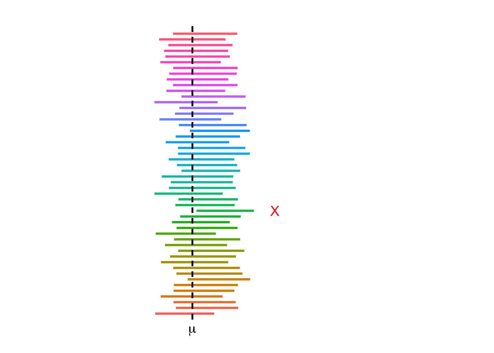

Chapter 5 Confidence Intervals
5.1 Introduction
Confidence intervals are a fundamental concept in statistics that allow us to make inferences about a population based on a sample. They provide a range of values, derived from the sample data, that is likely to contain the true population parameter with a specified level of confidence.
We will start by introducing point estimates which are used to estimate population parameters and then move on to interval estimates which utilzie point estimates to calculate them.
Definition 5.1 A point estimate is a single numerical value computed from sample data that serves as the best guess of an unknown population parameter.
Example 5.1
- \(\bar{x}\) is a point estimate of \(\mu\)
- \(s^2\) is a point estimate of \(\sigma^2\)
- \(s\) is a point estimate of \(\sigma\)
Recall in Section 4.1 where we introduced statistics inference, we discussed that we the values of statistics which are calculated and known to make conclusions on parameters which are unknown and quantify the degree of certainty of statements made.
When we calculate a statistic, it will not be exactly equal to the parameter it is estimating. For example, the sample mean \(\bar{x}\) is not exactly equal to the population mean \(\mu\). We can get an idea about the value of a parameter using an interval estimate which gives a range of real numbers around the statistic which we believe contains it.
Definition 5.2 A confidence interval is a plausible range of values that captures a parameter with a quantified degree of confidence.
In this course, all confidence intervals have the same basic skeleton:
\[\text{estimator} \pm \underbrace{ \left( \text{value from a reference distribution} \right) \times \left( \text{standard error of estimate} \right) }_{\textit{margin of error}}\]
The standard error of the estimator is the standard deviation of the the sampling distribution of the estimator.
The value from the reference distribution in the skeleton above will be either a value from the standard normal distribution the Student t-distribution, ot the chi-square distribution. The margin of error (MOE) can be considered as the distance around our estimator in which the true value of the parameter of interest will be found, with a specified level of confidence.
5.2 Interpretation
We use very specific language when we interpret a confidence interval.
Suppose we construct a \(C\%\) confidence interval for some parameter such that \(C\) is between 0 and 100. In repeated sampling, we are \(C\%\) confident that approximately \(C\%\) of the intervals will capture the true value of the parameter.
By this we mean that if we constructed several \(C\%\) confidence intervals using different samples (with or without replacing the units), then we should expect approximately \(C\%\) of these intervals to capture the parameter of interest. For example suppose we construct 1000 95% confidence intervals for the population mean \(\mu\). We would expect approximately 95% of these 1000 intervals (i.e. \(95\% \times 1000 = 950\)) to actually capture \(\mu\).
A more intuitive but equivalent interpretation is to state that we are \(C\)% confident that our target parameter is inside the interval constructed.
Remark. It is incorrect to state that there is a \(C\%\) probability that the interval we constructed contains the parameter of interest. We assume that the value of a parameter is fixed. Therefore when we construct a confidence interval, the interval either contains the parameter or it does not.
Not all confidence intervals contain the true value of the parameter. This can be illustrated by plotting many intervals simultaneously and observing.

Figure 5.1: Simulated 95% confidence intervals for the population mean
5.3 One Sample Confidence Intervals
In this section, we explore how to construct confidence intervals for estimating a single population parameter, focusing on the population mean. We will examine the logic behind confidence intervals, the assumptions required, and how different levels of confidence affect the width of the interval. This foundational concept is essential for interpreting sample data in the context of uncertainty and variability.
5.3.1 On a Population Mean
5.3.1.1 When \(\sigma\) is Known
When we know the population standard deviation \(\sigma\), we can construct a confidence interval for \(\mu\) in the following manner.
A \((100 - \alpha)\%\) confidence interval on \(\mu\) when \(\sigma\) is known is given by \[\bar{x} \; \pm \; z_{\alpha/2} \left( \frac{\sigma}{\sqrt{n}} \right)\]
The \(z_{\alpha/2}\) value is obtained from standard normal tables. The standard error is \(\frac{\sigma}{\sqrt{n}}\) and the margin of error is \(z_{\alpha/2} \left( \frac{\sigma}{\sqrt{n}} \right)\)
The critical value \(z_{\ast}\) is illustrated in Figure 5.2 below and depends on \(C\).
Figure 5.2: The central area under the standard normal curve with confidence level \(C\).
Table of Common \(z\)-values
| Confidence coefficient | Confidence level | \(z\) |
|---|---|---|
| 0.90 | 90% | 1.645 |
| 0.95 | 95% | 1.96 |
| 0.99 | 99% | 2.576 |
Example 5.2 Playbill magazine reported that the mean annual household income of its readers is $119,155. Assume this estimate is based on a sample of 80 households, and that the population standard deviation is known to be \(\sigma = 30{,}000\).
\(\bar{x} = 119{,}155\)
\(n = 80\)
\(\sigma = 30{,}000\)
Tasks:
Develop a 90% confidence interval estimate of the population mean.
Develop a 95% confidence interval estimate of the population mean.
Develop a 99% confidence interval estimate of the population mean.
90% CI Calculation
\[\bar{x} \pm z_{\alpha/2} \cdot \frac{\sigma}{\sqrt{n}} = 119{,}155 \pm 1.645 \cdot \frac{30{,}000}{\sqrt{80}}\] \[= 119{,}155 \pm 5{,}500.73\] \[= (113{,}654.27, \; 124{,}655.73)\]
95% CI Calculation
\[\bar{x} \pm z_{\alpha/2} \cdot \frac{\sigma}{\sqrt{n}} = 119{,}155 \pm 1.96 \cdot \frac{30{,}000}{\sqrt{80}}\] \[= 119{,}155 \pm 6{,}574.04\] \[= (112{,}580.96, \; 125{,}729.04)\]
99% CI Calculation
\[\bar{x} \pm z_{\alpha/2} \cdot \frac{\sigma}{\sqrt{n}} = 119{,}155 \pm 2.576 \cdot \frac{30{,}000}{\sqrt{80}}\] \[= 119{,}155 \pm 8{,}620.04\] \[= (110{,}534.96, \; 127{,}775.04)\]
Interpretation
We are 99% confident the mean household income of magazine readers is between $110,534.96 and $127,775.04.
Example 5.3 Scenario:
The number of cars sold annually by used car salespeople is known to be normally distributed, with a population standard deviation of \(\sigma = 15\). A random sample of \(n = 15\) salespeople was taken, and the number of cars each sold is recorded below. Construct a 95% confidence interval for the population mean number of cars sold, and provide an interpretation.
Raw data:
\[\begin{matrix} 79 & 43 & 58 & 66 & 101 \\ 63 & 79 & 33 & 58 & 71 \\ 60 & 101 & 74 & 55 & 88 \\ \end{matrix}\]
The sample mean is:
\[\bar{x} = \frac{79 + 43 + \cdots + 55 + 88}{15} = 68.6\]
R function:
simple.z.test = function(x, sigma, conf.level = 0.95) {
n = length(x);
xbar = mean(x);
alpha = 1 - conf.level;
zstar = qnorm(1 - alpha/2);
SE = sigma / sqrt(n);
xbar + c(-zstar * SE, zstar * SE);
}R output:
# Step 1. Entering data;
cars = c(79, 43, 58, 66, 101, 63, 79,
33, 58, 71, 60, 101, 74, 55, 88)
# Step 2. Finding CI;
simple.z.test(cars, 15)
## [1] 61.00909 76.19091Interpretation:
We estimate that the mean number of cars sold annually by all used car salespeople lies between 61 and 76, approximately. This type of estimate is correct 95% of the time.
5.3.1.2 When \(\sigma\) is Not known
Definition 5.3 Let \(\mu\) be the population mean. When the population standard deviation
is unknown, a confidence interval for \(\mu\) is given by:
\[\bar{x} \pm t_{n-1, \alpha/2} \left( \frac{s}{\sqrt{n}} \right)\]
where
\(\bar{x}\) is the sample mean;
\(s\) is the sample standard deviation;
\(n\) is the sample size.
Example 5.4 The composition of the Earth’s atmosphere may have changed over time. To study the nature of the atmosphere long ago, scientists examined the gas in air bubbles trapped in ancient amber. Amber is fossilized tree resin that preserved the atmospheric gases at the time it was formed.
Measurements on amber specimens from the late Cretaceous era (75 to 95 million years ago) give the following percent values of nitrogen:
\[ 63.4, 65.0, 64.4, 63.3, 54.8, 64.5, 60.8, 49.1, 51.0 \]
Assume these observations are a simple random sample (SRS) from the population of all ancient air bubbles. Construct a 90% confidence interval to estimate the mean percent of nitrogen in ancient air. (Today’s atmosphere contains about 78.1% nitrogen.)
Solution:
Let \(\mu\) represent the true mean percent of nitrogen in ancient air. We compute a 90% confidence interval for \(\mu\) using the sample data.
Given: \[\bar{x} = 59.5888, \quad s = 6.2552, \quad n = 9, \quad t^* = 1.860 \quad (\text{df} = 8)\]
\[59.5888 \pm 1.860 \left( \frac{6.2552}{\sqrt{9}} \right) = 59.5888 \pm 3.8782\]
\[\boxed{55.7106 \text{ to } 63.4670}\]
R code:
# Step 1: Entering the data
nitrogen <- c(63.4, 65.0, 64.4, 63.3, 54.8, 64.5, 60.8, 49.1, 51.0)
# Step 2: Constructing the 90% confidence interval
t.test(nitrogen, conf.level = 0.90)R output:
Example 5.5 Most owners of digital cameras store their pictures on the camera. Some will eventually download these to a computer or print them using their own printers or a commercial printer. A film-processing company wanted to know how many pictures were stored on cameras.
A random sample of 10 digital camera owners produced the following data:
\[ 25, 6, 22, 26, 31, 18, 13, 20, 14, 2 \]
Estimate with 95% confidence the mean number of pictures stored on digital cameras.
Solution:
We are given raw data with \(n = 10\) and no information about the population standard deviation, so we construct a confidence interval for the population mean using the t-distribution.
Step 1: Compute sample statistics
Sample mean: \(\bar{x} = \dfrac{177}{10} = 17.7\)
Sample variance (method 1 – direct): \[s^2 = \dfrac{\sum (x_i - \bar{x})^2}{n - 1} = \dfrac{742}{9} = 82.4556\]
Sample standard deviation: \[s = \sqrt{82.4556} = 9.081\]
Step 2: Find the critical value
For a 95% confidence interval with \(n = 10\), degrees of freedom = 9. From the t-distribution table: \[t_{(9, 0.025)} = 2.262\]
Step 3: Construct the confidence interval
\[\bar{x} \pm t^* \cdot \dfrac{s}{\sqrt{n}} = 17.7 \pm 2.262 \cdot \dfrac{9.081}{\sqrt{10}} = 17.7 \pm 6.495\]
\[\boxed{11.205 \text{ to } 24.195}\]
Interpretation:
We are 95% confident that the mean number of images stored on digital cameras is between 11.205 and 24.195.
R code:
# Step 1: Entering data
dataset <- c(25, 6, 22, 26, 31, 18, 13, 20, 14, 2)
# Step 2: Finding 95% confidence interval
t.test(dataset, conf.level = 0.95)R output:
Example 5.6 A manufacturing company produces electric insulators. If the insulators break when in use, a short circuit is likely. To test the strength of the insulators, destructive testing is performed to determine how much force (in pounds) is required to break them.
The following dataset consists of force values (in pounds) recorded for a random sample of 30 insulators:
\[ 1870, 1728, 1656, 1610, 1634, 1784, 1522, 1696, 1592, 1662, 1866, 1764, 1734, 1662, 1734, 1774, 1550, 1756, 1762, 1866, 1820, 1744, 1788, 1688, 1810, 1752, 1680, 1810, 1652, 1736 \]
Construct a 95% confidence interval for the population mean force required to break the insulators.
Solution:
We want a confidence interval for the population mean \(\mu\), where \(\mu =\) mean force required to break electric insulators. The population standard deviation is unknown, so we use a one-sample t-interval.
R code:
# Step 1. Entering data;
dataset <- c(1870, 1728, 1656, 1610, 1634, 1784, 1522, 1696, 1592, 1662,
1866, 1764, 1734, 1662, 1734, 1774, 1550, 1756, 1762, 1866,
1820, 1744, 1788, 1688, 1810, 1752, 1680, 1810, 1652, 1736)
# Step 2. Finding CI;
t.test(dataset, conf.level = 0.95)R output:
One Sample t-test
data: dataset
t = 105.41, df = 29, p-value < 2.2e-16
alternative hypothesis: true mean is not equal to 0
95 percent confidence interval:
1689.961 1756.839
sample estimates:
mean of x
1723.4 Interpretation:
We are 95% confident that the average force required to break an electric insulator is between 1689.961 pounds and 1756.839 pounds.
Example 5.7 The operations manager of a production plant would like to estimate the mean amount of time a worker takes to assemble a new electronic component. After observing 120 workers assembling similar devices, she noticed that their average time was 16.2 minutes (with a standard deviation of 3.6 minutes).
Construct a 92% confidence interval for the mean assembly time. State all necessary assumptions.
–>
5.3.2 On a Population Proportion
Previously, we have introduced two types of confidence interval based on known and unknown variance. Moreover, confidence intervals are also applied to an unknown population proportion. For example, suppose we are interested the proportion of total number of left-handed students among all students who are currently studying at University of Toronto Mississauga. The question is: how do we know such the parameter which estimates the proportion of left-handed students at UTM? While, it is impossible to proceed it directly by counting both the total number of students and all left-handed students at UTM, due to the complexity and the total workload of that task. Then, we have to work with confidence intervals.
First, we take a random sample of students at UTM, then we calculate how many students are left-handed by dividing total number of left-handed students in that sample with total number of students in it, and denote the proportion as \(\hat{p}\). Next we begin our confidence interval calculation to get a range of number with a certain level of confidence.
Now let’s begin with the proper definition of confidence interval on proportion.
Definition 5.4 We select a random sample of size \(n\) from a population with unknown proportion \(p\) of success. An approximate confidence interval for p is: \[p = \hat{p} \pm z_{\frac{\alpha}{2}} \cdot \sqrt{\frac{\hat{p}(1 - \hat{p})}{n}}, \text{ where $\hat{p} = \frac{\text{number of observations satisfying the criteria}}{n}$.}\] In addition, \(n\) is the sample size.
To apply this confidence interval, there are \(3\) conditions that we need to guarantee:
\(1\). Random sample;
\(2\). Independent and identically distributed Bernoulli trails;
\(3\). We have a large chosen sample size (\(n\hat{p} \ge 10\) and \(n(1-\hat{p}) \ge 10\)).
A good way to understand confidence interval is visualization. Now,
suppose we have a valid estimation \(\hat{p}\). After the entire procedure
of confidence interval, our population proportion (\(p\)) should be as the
following number line shows:

Figure 5.3: Visualization of the result of confidence interval on a proportion.
Remember that your final answer of the range of \(p\) must between \(0\) and \(1\), since we are working with proportion.
5.3.3 On a Population Variance
To construct a confidence interval for the population variance \(\sigma^2\), we rely on the chi-square (\(\chi^2\)) distribution. When the population is normally distributed, the sampling distribution of the statistic
\[
\frac{(n - 1) s^2}{\sigma^2}
\]
follows a chi-square distribution with \(n - 1\) degrees of freedom. Using this, a \((1 - \alpha) \times 100\%\) confidence interval for \(\sigma^2\) is given by:
\[
\left( \frac{(n - 1)s^2}{\chi^2_{\alpha/2}}, \frac{(n - 1)s^2}{\chi^2_{1 - \alpha/2}} \right)
\]
where \(\chi^2_{\alpha/2}\) and \(\chi^2_{1 - \alpha/2}\) are the critical values from the chi-square distribution corresponding to the lower and upper tails, respectively.
This interval is not symmetric and depends heavily on the shape of the chi-square distribution.
5.3.4 Assumptions
The construction of any confidence interval relies on a set of underlying assumptions. For one-sample confidence intervals, the key assumptions are:
- Independence: The observations in the sample must be independent of one another.
- Random sampling: The data should come from a random sample or randomized experiment.
- Normality:
- For means: The population should be normally distributed, especially for small sample sizes. If the sample size is large (typically \(n \geq 30\)), the Central Limit Theorem ensures approximate normality of the sampling distribution of the mean.
- For proportions: The sample size should be large enough such that both \(np \geq 10\) and \(n(1 - p) \geq 10\).
- For variances: The population must be normally distributed to use the chi-square-based interval for \(\sigma^2\).
If these assumptions are violated, the resulting confidence interval may not be valid or reliable. –>
5.4 Two Sample Confidence Intervals
We have discussed three distinct types of one sample confidence interval. Now, let’s keep moving forward to see how confidence interval works for two sample. The aim of one sample confidence interval is giving a range of numbers to estimate population mean or proportion with a certain percentage of confidence. For two samples, the aim is comparing with sample has a relatively larger or smaller population mean or proportion with a certain percentage of confidence.
5.4.1 On a Difference of Means
Suppose we are interested in the final mark of MAT135 from the same semester but with different campuses at the University of Toronto (let’s use UTSG and UTM as the two independent population groups). We want to know which campus has a relatively higher average score, the question is: how do we determine that? It is going to be complicated if we proceed with the study directly by determining the sum of everyone’s final marks and calculating the average for the two campuses. Similarly, as one sample confidence interval, we can select two groups of random sample from the two campuses (one group per each campus), and then calculate each sample mean. Finally, we apply a confidence interval to approximate which population has a higher mean (or average).
Similar to one-sample confidence intervals on a mean, we examine various cases of two-sample confidence intervals on a difference means.
5.4.1.1 When \(\sigma_1\) and \(\sigma_2\) are Known
Definition 5.5 Suppose we are given the population variance for both two independent groups of population. The confidence interval of \(\mu_1 - \mu_2\) (difference of mean between population group 1 and 2) is given by the following: \[(\bar{x}_{1} - \bar{x}_{2}) \pm z_{\small\alpha/2} \cdot \sqrt{ \frac{\sigma_1^2}{n_1} + \frac{\sigma_2^2}{n_2}}.\] For \(\sigma_1^2\), which is population variance of population group 1; \(n_1\) is the sample size chosen form population group 1. Similarly for \(\sigma_2^2\), which is population variance of population group 2; \(n_2\) is the sample size chosen form population group 2.
This situation is a bit unrealistic with other cases because the population variance (\(\sigma^2\)) from both groups are rare to know.
5.4.1.2 When \(\sigma_1\) and \(\sigma_2\) are Not Known
In practice, we usually do not have the information about population variance. The situations in this section are a lot more realistic. In the case when the variances of both populations are unknown, we consider two subcases.
5.4.1.3 When \(\sigma_1 = \sigma_2\)
We first examine the case where we assume the standard deviation of both populations is assumed equal.
Definition 5.6 Suppose that the chosen two independent samples have same unknown population variance. Then the two sample confidence interval for \(\mu_1 - \mu_2\) is given by the following: \[(\bar{x}_1 - \bar{x}_2) \pm t_{n_1+n_2-2; \alpha/2} \cdot s_p \cdot \sqrt{\frac{1}{n_1} + \frac{1}{n_2}}.\] In this case, \(n_1\) and \(n_2\) are sample size from the two chosen samples respectively; \(s_p\) is aggregated variance of both samples combined which accommodates samples of different sizes. Additionally, \(s_p\) is called pooled standard deviation which is calculated by the following equation: \[s_p^2 = \frac{(n_1-1) s_1^2 + (n_2-1) s_2^2 }{n_1+n_2-2},\] where \(s_1^2\) and \(s_2^2\) are sample variance of the two chosen samples respectively.
Then we take the square root \(s_p = \sqrt{s_p^2}\) to get pooled standard deviation.
Remark. Alternatively we can also write the two sample confidence in Definition 5.6 as \[(\bar{x}_1 - \bar{x}_2) \pm t_{n_1+n_2-2; \alpha/2} \sqrt{s_p^2 \left(\frac{1}{n_1} + \frac{1}{n_2} \right) }\]
The pooled variance (also known as combined variance, composite variance, or overall variance) is a method to calculate such a value in order to estimate variance between several distinct populations. The mean of each population may or may not be the same, but the variance of these populations are same. Pooled standard deviation does similar thing, we use that value to estimate standard deviation instead of variance.
5.4.1.4 When \(\sigma_1 \neq \sigma_2\)
We now examine the case where we assume the standard deviation of both populations is assumed different.
Definition 5.7 Suppose that our chosen two independent samples with unequal and unknown population variance, then the confidence interval for \(\mu_1 - \mu_2\) is given by: \[(\bar{x}_1 - \bar{x}_2) \pm t_{df; \alpha/2} \cdot \sqrt{\frac{s_1^2}{n_1} + \frac{s_2^2}{n_2}}\] where \(df = \min(n_1-1, n_2-1)\) and \(s_1^2\) and \(s_2^2\) are sample variance of the two chosen groups; and \(n_1\), \(n_2\) are the sample size of the two chosen groups respectively.
Remark. Note a more accurate approximation of the degrees of freedom is given by \[df = \frac{\left( \frac{s_1^2}{n_1} + \frac{s_2^2}{n_2} \right)^2} { \left( \frac{1}{n_1 - 1} \left( \frac{s_1^2}{n_1} \right)^2 \right) + \left( \frac{1}{n_2 - 1} \left( \frac{s_2^2}{n_2} \right)^2 \right) }\]
This approximation is accurate when both sample sizes \(n_1\) and \(n_2\) are 5 or larger.
5.4.1.5 Assumptions
Same as all previous confidence intervals, we still need several conditions that guarantee the validity two sample confidence interval:
1. The two chosen sample is required to be independent and random;
2. If both sample size are small (both \(n_1 < 30\) and \(n_2 < 30\)), then both sample should be from normal population;
3. If one of the sample has a small size (either \(n_1 < 30\) or \(n_2 < 30\)), then the smaller sample must be from a normal population;
Note that if both \(n_1 \ge 30\) and \(n_2 \ge 30\), then normality assumption is not required by the Central Limit Theorem.
5.4.2 On a Difference of Proportions
Furthermore, two sample confidence intervals can approximate the proportion as well. Suppose we are interested in the proportion of left-handed students in UTSG and UTM, and we are asked to find the campus that has a relatively larger proportion of left-handed students. To begin with this task, it is impossible to complete it directly by calculation, due to its complexity and high workload. We can use select two independent groups (one group from each campus), then apply two sample confidence interval to approximate which campus has a larger proportion.
Definition 5.8 Draw an SRS of size \(n_1\) from a population having proportion \(p_1\) of successes and draw an independent SRS of size \(n_2\) from another population having proportion \(p_2\) of successes. When \(n_1\) and \(n_2\) are large, an approximate level C confidence interval for \(p_1 - p_2\) is given by: \[(\hat{p}_1 - \hat{p}_2) \pm z_{\alpha/2} \cdot \sqrt{ \frac{\hat{p}_1(1-\hat{p}_1)}{n_1} + \frac{\hat{p}_2(1-\hat{p}_2)}{n_2}}.\] Now, \(n_1\) and \(n_2\) are sample size of selected random sample from each population; \(\hat{p}_1\) and \(\hat{p}_2\) are the proportion of success of each selected random sample respectively.
5.4.2.1 Assumptions
1. Randomization Condition: The data in each group should be drawn independently and at random from a population or generated b y a completely randomized designed experiment.
2. The \(10\%\) Condition: If the data are sampled without replacement, the sample should not exceed \(10\%\) of the population. If samples are bigger than \(10\%\) of the target population, random draws are no longer approximately independent.
3. Independent Groups Assumption: The two groups we are comparing must be independent from each other.
4. Sample size requirement: both selected sample size must greater than \(70\).
5.4.3 On a Ratio of Variances
Confidence interval is a strong technique in inferential statistics, we have discussed its application on population mean, proportion and dependent data. Now, let’s move on to variance.
One simple method involves just looking at two sample variances. Logically, if two population variances are equal, then the two sample variances should be very similar. When the two sample variances are reasonably close, you can be reasonably confident that the homogeneity assumption is satisfied and proceed with, for example, Student t-interval. However, when one sample variance is three or four times larger than the other, then there is reason for a concern. The common statistical procedure for comparing population variances \(\sigma_1^2\) and \(\sigma_2^2\) makes an inference about the ratio of \((\sigma_1^2)/(\sigma_2^2)\).
To make an inference about the ratio of \((\sigma_1^2)/(\sigma_2^2)\) we collect sample data and use the ratio of the sample variances
\((\sigma_1^2)/(\sigma_2^2)\).
At this point, let’s derive the confidence interval. We know that: \(\frac{s_1^2/\sigma_1^2}{s_2^2/\sigma_2^2} \sim F_{n_1-1, n_2 -1}\).
Then we can construct our confidence interval as:
\[ P \left( F_{n_1-1, n_2 -1; 1-\alpha/2} < \frac{s_1^2/\sigma_1^2}{s_2^2/\sigma_2^2} < F_{n_1-1, n_2 -1; \alpha/2} \right) = 1 -\alpha. \] Now, the reference distribution of this confidence interval is F-distribution with \(n_1 - 1\) and \(n_2 -1\) degrees of freedom, leaving areas of \(1 - \alpha/2\) and \(\alpha/2\), respectively, to the right.
Rearranging gives us:
\[ P \left( \frac{s_1^2}{s_2^2}\frac{1}{F_{n_1-1, n_2 -1; \alpha/2}} < \frac{\sigma_1^2}{\sigma_2^2} < \frac{s_1^2}{s_2^2} \frac{1}{F_{n_1-1, n_2 -1; 1-\alpha/2}} \right) = 1 - \alpha. \]
Using the face that
\(F_{n_1-1,n_2-1; 1 - \alpha/2} = \displaystyle\frac{1}{F_{n_2-1,n_1-1; \alpha/2}}\),
we have:
\[ P\left( \frac{s_1^2}{s_2^2} \frac{1}{F_{n_1-1, n_2-1, \alpha/2}} < \frac{\sigma_1^2}{\sigma_2^2} < \frac{s_1^2}{s_2^2} F_{n_2-1, n_1 - 1, \alpha/2} \right)= 1 - \alpha.\]
5.4.3.1 Assumptions
The confidence interval for the ratio of two population variances relies on the following assumptions:
- Independence: The two samples must be independent of each other.
- Random Sampling: Each sample must be obtained through a process of random selection.
- Normality: Both populations from which the samples are drawn must follow a normal distribution. This assumption is critical because the ratio of sample variances follows an F-distribution only when the underlying populations are normally distributed.
- Equal Measurement Scale: The two variables being compared should be measured on the same or comparable scales, since we are comparing their variability.
Violations of these assumptions, particularly normality, can lead to inaccurate confidence intervals and invalid conclusions.
5.5 Confidence Intervals on Paired Data
It may appear that two sample confidence interval only works on two independent samples, however what about two dependent samples? Suppose we are interested the growth of height from several distinct elementary students. We measure their height recently, then we will do it another time with five years later. The question is: how are we going to proceed with two confidence interval? While, the answer is yes. We are able to do so by constructing two sample confidence interval, but with a different strategy.
We may have situations
| Sample Units | Measurement 1 (\(M_{1}\)) | Measurement 2 (\(M_{2}\)) | Difference (\(M_{2}-M_{1}\)) |
|---|---|---|---|
| 1 | \(x_{11}\) | \(x_{12}\) | \(x_{d1} = x_{12} - x_{11}\) |
| 2 | \(x_{21}\) | \(x_{22}\) | \(x_{d2} = x_{22} - x_{21}\) |
| 3 | \(x_{31}\) | \(x_{32}\) | \(x_{d3} = x_{32} - x_{31}\) |
| \(\vdots\) | \(\vdots\) | \(\vdots\) | \(\vdots\) |
| n | \(x_{n1}\) | \(x_{n2}\) | \(x_{dn} = x_{n2} - x_{n1}\) |
The table shows how calculate paired data. In each row, Measurement 1is a measurement on a sample unit and the Measurement 2 is a measurement on the same unit. We then calculate the difference between the two measurements for each of the measurements for each unit as shown in the last column, difference between the second and the first measurement (\(M_2 - M_1\)).
Remark. In the table above, we calculated differences as \(M_{2} - M_{1}\), however it is also possible to calculate \(M_{2} - M_{1}\). The final results and interpretation will be the same, however one order in which measurements are subtracted may be more convenient than the other.
To calculate the confidence interval on paired data, we first need to calculate the mean and sample variance of the difference data using:
\[\bar{x}_{d} = \displaystyle\frac{\displaystyle\sum_{i=1}^{m} x_{di}}{n}, \quad\quad s_{d} = \displaystyle\frac{\displaystyle\sum_{i=1}^{m} (x_{di} - \bar{x}_{d} )^2}{n-1}.\]
Then we can use the fourth column to get the mean value, sample variance and sample standard deviation of the difference. Now, let’s begin with the proper definition:
Definition 5.9 Suppose we have two samples that are dependent with each other, the confidence interval on paired data’s mean (\(\mu_d\)) is given by: \[\bar{x}_d \pm t_{n-1, \alpha/2} \cdot \frac{s_d}{\sqrt{n}}.\] In this case, the reference distribution is t-distribution with \(n-1\) degrees of freedom (sample size minus \(1\)), \(\bar{x}_d\) represents the sample mean of difference between the two measurements on the paired data, \(s_d\) is the sample standard deviation of difference between the two measurements.
5.5.0.1 Assumptions
The confidence interval for the mean of paired data relies on the following assumptions:
Paired Observations: Each pair of values must come from the same experimental unit or matched units. For example, a before-and-after measurement on the same subject or matched subjects in a treatment and control group.
Independence of Pairs: The pairs themselves must be independent of each other. That is, the differences between paired observations should not influence one another.
Normality of Differences: The distribution of the differences between the paired observations (not the original values themselves) should be approximately normal. This assumption becomes less critical with larger sample sizes due to the Central Limit Theorem.
Random Sampling: The sample of pairs should be obtained using a random process to ensure unbiased inference.
Violations of these assumptions may lead to inaccurate or misleading confidence intervals.
5.6 Sample Size Selection using Confidence Intervals
In this section we will examine techniques to calculate the minimum sample size required to obtain a confidence interval to be within a specified margin of error.
5.6.1 Calculating Sample Size for a Confidence Interval on a Mean
We will examine how to calculate the minimum sample size \(n\) for a confidence interval on a mean for a margin of error \(E\) at confidence level \(1-\alpha\).
When \(\sigma\) is Known
For a desired margin of error \(E\) and confidence level \(1-\alpha\): \[E = z_{\alpha/2}\,\frac{\sigma}{\sqrt{n}}\]
We can rearrange \(E\) to calculate the sample size using \[n = \left( \frac{z_{\alpha/2}\,\sigma}{E} \right)^2\] where \(n\) is always rounded up to the next integer.
Example 5.8 A manufacturer of pharmaceutical products analyzes a specimen from each batch of a product to verify the concentration of the active ingredient. The chemical analysis is not perfectly precise. Repeated measurements on the same specimen give slightly different results. Suppose we know that the results of repeated measurements follow a Normal distribution with mean \(\mu\) equal to the true concentration and standard deviation \(\sigma = 0.0068\) grams per liter. (That the mean of the population of all measurements is the true concentration says that the measurements process has no bias. The standard deviation describes the precision of the measurement.) The laboratory analyzes each specimen \(n\) times and reports the mean result.
Management asks the laboratory to produce results accurate to within \(\pm 0.005\) with 95% confidence. How many measurements must be averaged to comply with this request?
\[n = \left( \displaystyle \frac{z_{0.025}\,\sigma}{E} \right)^2 = \Bigl(\frac{1.96 \times 0.0068}{0.005}\Bigr)^2 \approx 7.1\] Since the sample size should be a whole number, we round our result up to \(n=8\) measurements.
In Example 5.8, we note that 7 measurements will give a slightly larger margin of error than desired, and 8 measurements a slightly smaller margin of error, the lab must take 8 measurements on each specimen to meet management’s demand. Always round up to the next higher whole number when finding \(n\).
Example 5.9 Planning value \(\sigma=22.50\), desired margin \(E=2\).
90% confidence, \(z_{0.05}=1.65\): \[n = \Bigl(\frac{1.65 \times 22.50}{2}\Bigr)^2 \approx 344.6 \quad\Longrightarrow\quad n = 345.\]
95% confidence, \(z_{0.025}=1.96\): \[n = \Bigl(\frac{1.96 \times 22.50}{2}\Bigr)^2 \approx 486.2 \quad\Longrightarrow\quad n = 487.\]
99% confidence, \(z_{0.005}=2.58\): \[n = \Bigl(\frac{2.58 \times 22.50}{2}\Bigr)^2 \approx 842.5 \quad\Longrightarrow\quad n = 843.\]
When \(\sigma\) is Not Known
When the population standard deviation \(\sigma\) is not known, we cannot use the standard normal distribution (Z-distribution) to determine the required sample size. Instead, we estimate \(\sigma\) using the sample standard deviation \(s\) from a preliminary or pilot study, and we rely on the t-distribution with \(n - 1\) degrees of freedom.
The formula for determining the sample size becomes:
\[ n = \left( \frac{t_{n-1, \alpha/2} \cdot s}{E} \right)^2 \]
However, there’s a complication: the critical value \(t_{n-1, \alpha/2}\) depends on \(n\), the very quantity we are trying to compute. Therefore, an iterative approach is usually required. The steps are as follows:
- Start with an initial guess for \(n\) (often using the Z-distribution as an approximation).
- Find the corresponding critical value \(t_{n-1, \alpha/2}\) from the t-distribution table.
- Plug this value back into the formula to update your estimate of \(n\).
- Repeat steps 2 and 3 until the value of \(n\) converges (i.e., does not change with further iterations).
- Round up to the next whole number, as sample size must be an integer.
If no prior estimate of the sample standard deviation is available, you may conduct a small pilot study to obtain one, or use a conservative planning value based on subject-matter knowledge.
This method is more complex than the known-\(\sigma\) case, but it allows for more realistic planning in most real-world situations where \(\sigma\) is unknown.
5.6.2 Calculating Sample Size for a Confidence Interval on a Proportion
We will examine how to calculate the minimum sample size \(n\) for a confidence interval on a proportion for a margin of error \(E\) at confidence level \(1-\alpha\). For sample of size \(n\) with unknown population proportion \(p\): \[\hat p \pm z^* \sqrt{ \displaystyle \frac{\hat p(1-\hat p)}{n}}.\] where the margin of error is \[E=z^*\sqrt{ \displaystyle \frac{p^*(1-p^*)}{n}}\] we can rearrange \(E\) to calculate the sample size using \[n = \left( \displaystyle \frac{z^*}{E} \right)^2\,p^*(1-p^*),\] where \(p^*\) can be a planning value, which is value obtained from prior information such as a pilot study. If we do not have any prior information on \(p^*\), we can use \(p^* = 0.5\) which is the conservative value that maximizes the product \(p^*(1-p^*)\).
Example 5.10 Aisha Shariff and Yvette Ye are the candidates for mayor in a large
city. You are planning a sample survey to determine what percent of the
voters plan to vote for Shariff. This is a population proportion \(p\).
You will contact an SRS of registered voters in the city. You want to
estimate \(p\) with 95% confidence and a margin of error no greater than
3%, or 0.03. How large a sample do you need?
For a 95% CI on \(p\): \(z_{0.025} = 1.96\). Margin of error = 0.03. Since
no information on a good estimate of \(p\), use \(p^{*} = 0.5\).
\[1.96 \sqrt{\frac{(0.5)(1 - 0.5)}{n}} \le 0.03 \quad\Longrightarrow\quad n = \left(\frac{1.96}{0.03}\right)^{2} (0.5)(0.5) \approx 1067.1.\] Round up: \[n = 1068.\]
Example 5.11 The percentage of people not covered by health care insurance in 2007 in the USA was 15.6%. A congressional committee has been charged with conducting a sample survey to obtain more current information.
What sample size would you recommend if the committee’s goal is to estimate the current proportion of individuals without health care insurance with a margin of error of 0.03? Use a 95% confidence level.
Repeat part (a) using a 99% confidence level.
\[\text{(a) } n = \left(\frac{z^{*}}{E}\right)^{2} p^{*}(1-p^{*}), \quad z^{*} = 1.96, \; E = 0.03,\; p^{*} = 0.156.\] \[n = \left(\frac{1.96}{0.03}\right)^{2} (0.156)(1 - 0.156) \approx 563.\]
\[\text{(b) } n = \left(\frac{2.58}{0.03}\right)^{2} (0.156)(1 - 0.156) \approx 974.\]
Example 5.12 A consumer advocacy group would like to find the proportion of consumers who bought the newest generation of iPhone and were happy with their purchase. How large a sample should they take to estimate \(p\) with 2% margin of error and 90% confidence?
Parameters: \[\begin{aligned} E &= 0.02, \quad\text{(margin of error)}\\ \text{Confidence level} &= 0.90 \;\Longrightarrow\; \alpha = 0.10,\;\alpha/2 = 0.05,\\ z^{*} &= z_{0.05} = 1.645,\\ p^{*} &= 0.5,\quad p^{*}(1 - p^{*}) = 0.5 \times 0.5 = 0.25. \end{aligned}\]
Sample‐Size Formula: \[n \;=\; \left(\frac{z^{*}}{E}\right)^{2}\;p^{*}(1 - p^{*}).\]
Substituting \(z^{*} = 1.645\), \(E = 0.02\), and \(p^{*}(1 - p^{*}) = 0.25\): \[\begin{aligned} n &= \left(\frac{1.645}{0.02}\right)^{2} \times 0.25 = \bigl(82.25\bigr)^{2} \times 0.25 = 6{,}764.0625 \times 0.25 \\[0.5em] &= 1{,}691.015625. \end{aligned}\]
Since \(n\) must be a whole number and we always round up to ensure the margin of error is at most \(2\%\), we take \[n = 1{,}692.\]